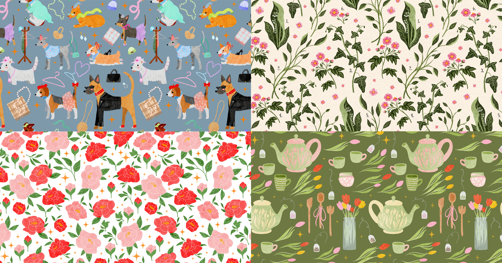
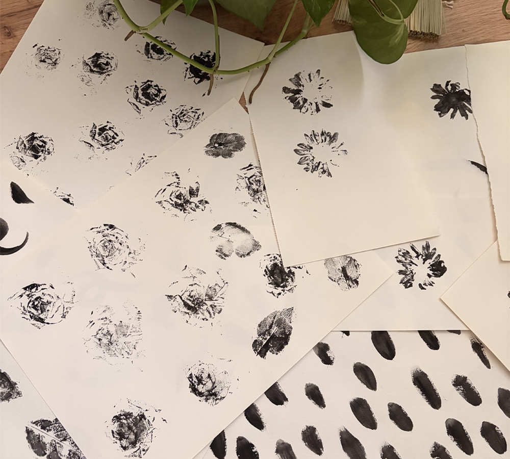
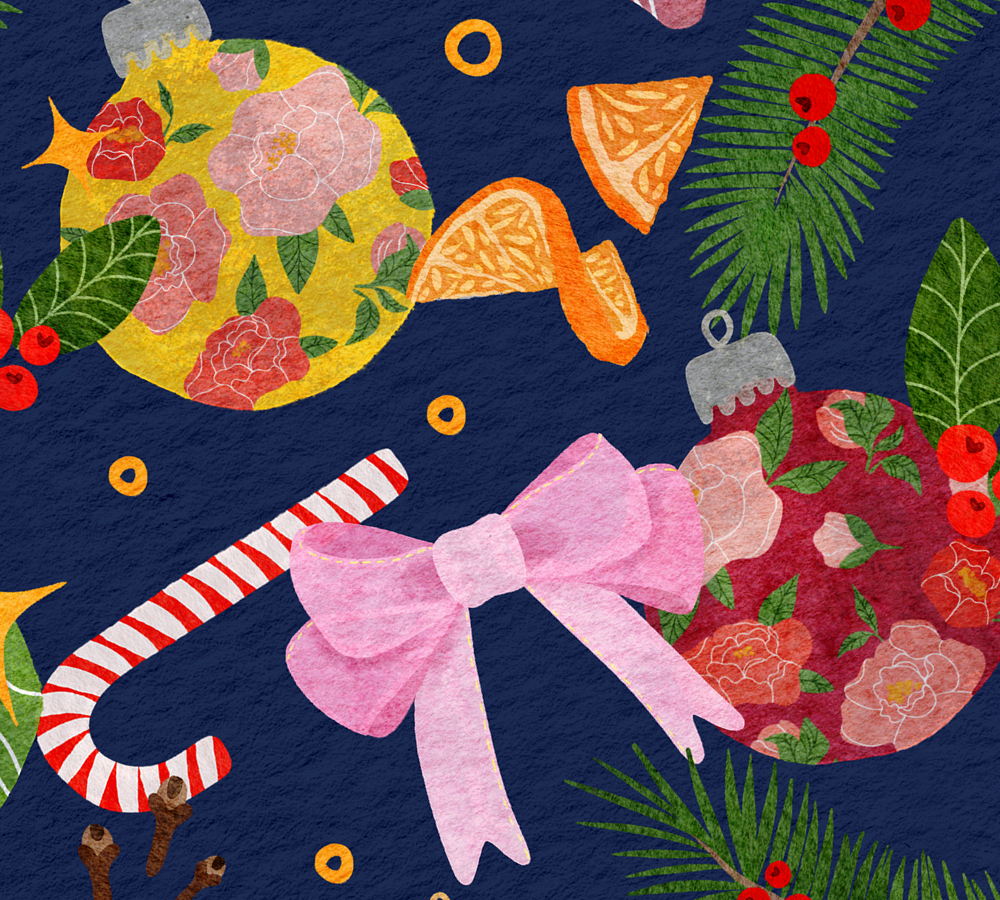
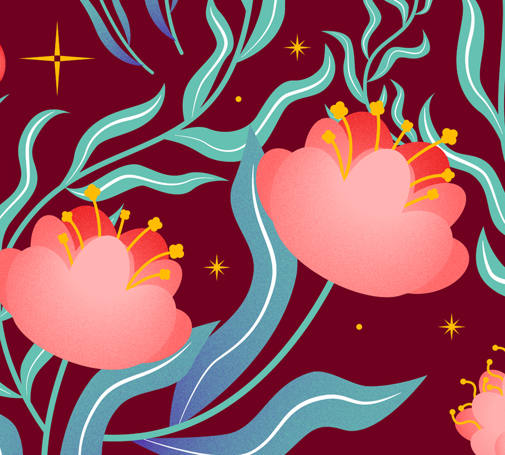
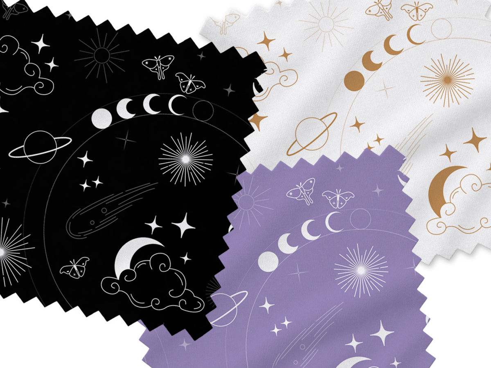
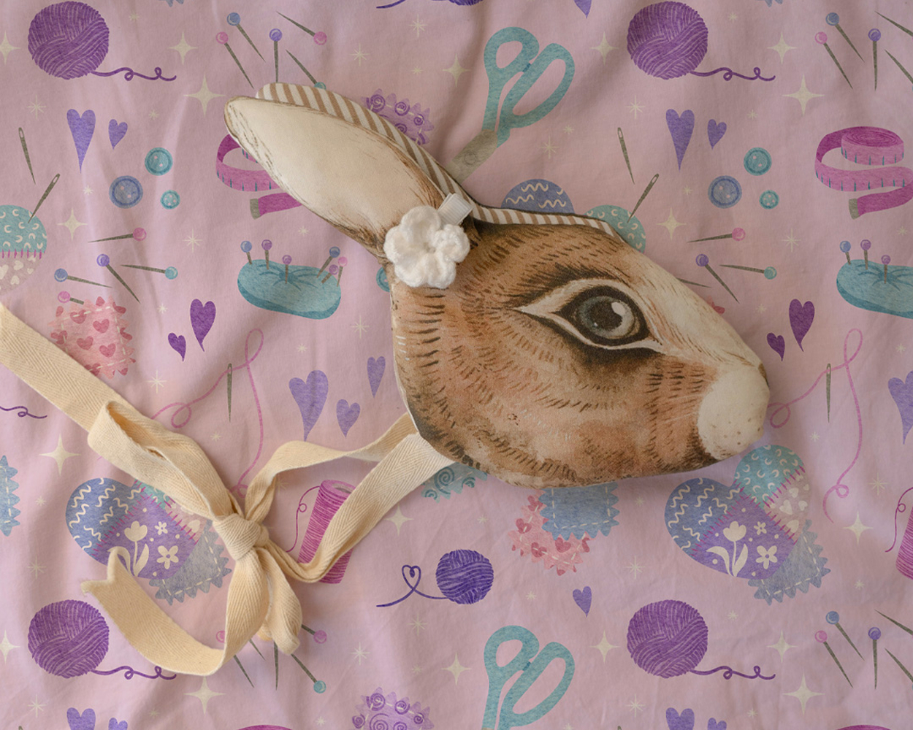
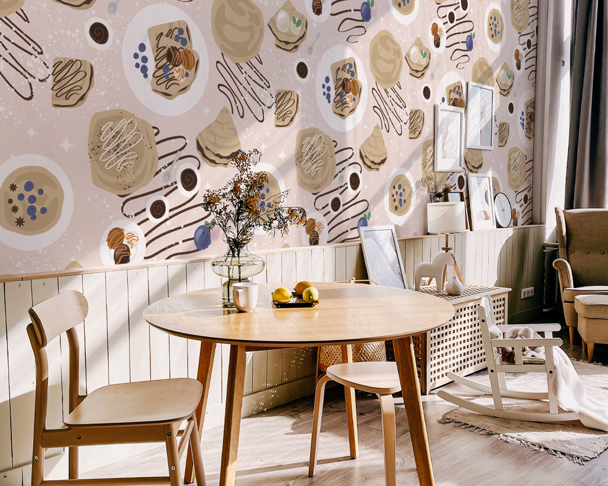

Surface patterns
My pattern collection
Original, licensable patterns for wallpaper, textiles and print-on-demand, all drawn from scratch by hand. Available on Patternbank, Spoonflower, Redbubble and Patterned, where my designs have already sold.
Surface patterns
Original, licensable patterns for wallpaper, textiles and print-on-demand, all drawn from scratch by hand. Available on Patternbank, Spoonflower, Redbubble and Patterned, where my designs have already sold.
[3–4 patterns from the collection side by side]

My own collection of original prints with an enchanted botanical feel: whimsical florals, mystical gardens, celestial and zodiac motifs, fairytale scenes and a playful range for kids. Dogs have my heart, so there are plenty of characterful canine prints too, plus seasonal favourites like my Halloween geese.
Everything is made by hand, from scratch. I draw each motif in Procreate, and for some collections I paint with traditional techniques, then scan the artwork and build the repeat digitally. No stock elements and no generated motifs: the slightly imperfect, hand-made line is what gives the prints their character.
[Hand-painted original or Procreate sketch]

[Pattern detail at 100%]

[Another pattern from the set]

I usually work with a full drop repeat, where the tile repeats square next to square. Every tile is prepared in print-ready quality, so the pattern works on wallpaper and fabric as well as on smaller products. A pattern comes in one to four colourways, depending on where it is meant to be used.
[One pattern in 3–4 colourways]

[Pattern on fabric or wallpaper]

[Pattern on a product: cushion, bag, gift wrap]
